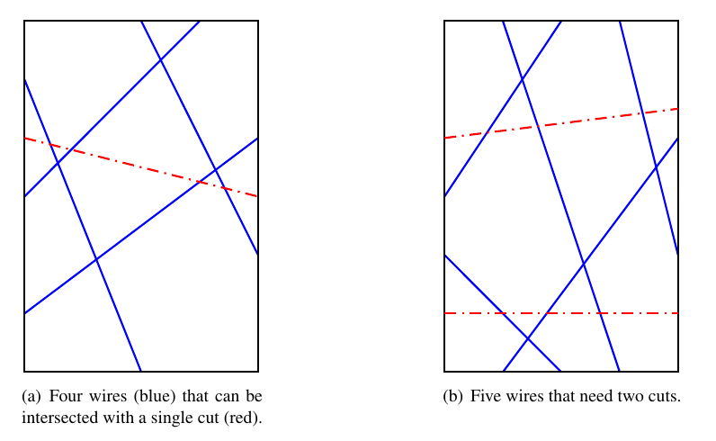

在一个宽度为 $w$，高度为 $h$ 的矩形中有 $n$ 条线段 $s_1, s_2, \cdots, s_n$，每条线段的两端都在矩形的边界上且所有端点互不相同，保证每条线段连接矩形的不同两边。
你需要在矩形中额外加入 $k$ 条线段 $t_1, t_2, \cdots, t_k$，规则同之前的 $n$ 条线段，使得对 $\forall i \in \left[ 1, n \right], \exists j \in \left[ 1, k \right]$，使得 $s_i$ 与 $t_j$ 相交。如下图所示：
求在满足粉色条件的情况下 $k$ (加入的线段条数) 的最小值。
第一行包含三个正整数 $n, w, h$ ($n \leq 10^6; w, h \leq 10^8$)，分别表示原有线段的个数，以及矩形的宽度和高度。
接下来 $n$ 行，每行四个非负整数 $x_1, y_1, x_2, y_2$ ($0 \leq x_1, x_2 \leq w; 0 \leq y_1, y_2 \leq h$)，表示一条连接 $\left( x_1, y_1 \right)$ 和 $\left( x_2, y_2 \right)$ 的线段。保证所有的 $\left( x_i, y_i \right)$ 都在矩形的边界上且不在矩形的角上，所有的 $\left( x_i, y_i \right)$ 互不相同，且 $\left( x_1, y_1 \right)$ 和 $\left( x_2, y_2 \right)$ 连接矩形的不同两边。
第一行输出一个整数，表示 $k$ 的最小值。
接下来 $k$ 行，每行四个实数 $x_1, y_1, x_2, y_2$，以相同的格式描述额外加入的一条线段。
你需要保证加入线段后任意两个端点的 Euclid 距离不小于 $10^{-6}$。
如果有多组满足 $k$ 最小的解，输出任意一组均可。
首先容易发现答案不超过 $2$，因为任意一条线段至少与矩形的其中一条对角线相交。
(ps: 注意不能输出矩形的顶点，因此要利用输入是整数的性质平移一小段，如 $\left( \dfrac 12, 0 \right) - \left( W - \dfrac 12, H \right)$)
因此我们只需要判定答案是否能为 $1$。
我们将矩形看成一个 "圈"，将每条线段 $s_i$ 染上颜色 $i$。从某个点出发，绕一圈将所遇到的线段颜色记为 $c_1, c_2, \cdots, c_{2 n}$。
(ps: 如上左图从左下角开始逆时针绕一圈，所得到的颜色序列就是 $2, 4, 1, 3, 4, 2, 3, 1$)
我们将这些颜色排到圈上后，额外加入的线段 $t$ 可以看成将圈断成两条链。而 $s_i$ 与 $t$ 相交就当且仅当两个颜色 $i$ 被划分到两个链中。
而所有的 $s_i$ 都要与 $t$ 相交，说明 $t$ 将圆断成的两条链中，每一侧都是所有颜色 $1, 2, \cdots, n$ 的一个排列。
因此只需要判定一个长度为 $2 n$ 的圆排列中是否存在一个长度为 $n$ 的子段是 $1 \sim n$ 的排列，双指针记录每个元素的出现次数 (的奇偶性) 即可。
时间复杂度 $O \left( n \log n \right)$ (对所有坐标排序)。
#include <bits/stdc++.h>
using std::cin;
using std::cout;
typedef std::pair <int, int> pr;
const int N = 1000054;
int X, Y, n, c = 0;
int f[N];
pr a[2 * N];
struct printer {
int v;
printer (int v_ = 0) : v(v_) {}
friend std::ostream & operator << (std::ostream &out, const printer &B) {
if (B.v < X) return out << B.v << ".5 0";
else if (B.v < X + Y) return out << X << ' ' << B.v - X << ".5";
else if (B.v < X + Y + X) return out << X + Y + X - B.v - 1 << ".5 " << Y;
else return out << '0' << ' ' << X + Y + X + Y - B.v - 1 << ".5";
}
};
inline int proj(int x, int y) {
return !y ? x :
x == X ? X + y :
y == Y ? X + Y + X - x :
!x ? X + Y + X + Y - y : -1;
}
inline void flip(int x) {c += -f[x] | 1, f[x] ^= 1;}
int main() {
int i, x1, y1, p1, x2, y2, p2;
std::ios::sync_with_stdio(false), cin.tie(NULL);
cin >> n >> X >> Y;
for (i = 0; i < n; ++i)
cin >> x1 >> y1 >> x2 >> y2, p1 = proj(x1, y1), p2 = proj(x2, y2),
assert(~p1 && ~p2), a[i] = pr(p1, i), a[i + n] = pr(p2, i);
std::sort(a, a + 2 * n), a[2 * n] = *a;
for (i = 0; i < n; ++i) flip(a[i].second);
for (i = 0; i < n; ++i)
if (c == n)
return cout << '1' << '\n' << printer(a[i].first - 1) << ' ' << printer(a[i + n].first - 1) << '\n', 0;
else
flip(a[i].second), flip(a[i + n].second);
cout << "2\n0.5 0 " << X - 1 << ".5 " << Y << "\n0.5 " << Y << ' ' << X - 1 << ".5 0\n";
return 0;
}
坑1：注意一些边界，如 $n = 1$ 时两个端点不要都在同一个边界上。利用 $a_i$ 和 $a_{i + n}$ 的位置可以较有效地避免这一点。
坑2：可以通过将点映射到 (环上的) 一维坐标来方便排序。